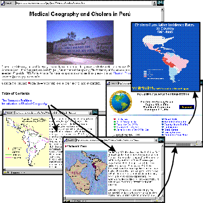

Figure 3. Web pages from the assignment entitled "Cholera in Peru: An Introduction to Medical Geography and Epidemiological Mapping". Students use GIS software to map the spread of the 1991 Cholera epidemic in Peru. In addition to the Web pages prepared at the University of Texas, this module contains external links to the U.S. Centers for Disease Control, Pan-american Health Organization, World Health Organization, and other agencies that publish data on infectious diseases.

Return to the Visitor's Information page.